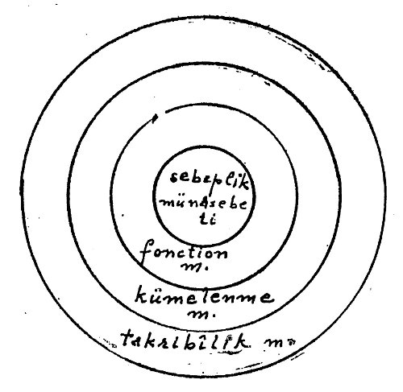

Önce F. Bacon, daha sonra Stuart Mill fiziki ilimlerin tecrübelerinde kullanılmakta olan araştırma yollarının (procédé) kurallarını tespit ettiler. Vakıa, bütün araştırmalar, keşifler bu kurallara uyularak yapılmış değilse de, araştırmaların incelenmesinden çıkan kuralların bilinmesinin yeni araştırmaları kolaylaştıracağı meydandadır. Bunlar Stuart Mill’e göre başlıca dört kuraldır: 1) Uygunluk metodu, 2) Fark metodu, 3) Birlikte değişmeler metodu, 4) Tortular metodu.

1. Uygunluk metodu: Âlim bir sebebin eserini veya bir eserin sebebini aradığına göre ilk hali ayırmalıdır:
I. Bilinen sebebe A diyelim. Türlü hal ve şartlarda A’yı meydana getirmek istenirse (bu türlü hallerde A’dan başka birleşik nokta olmadığına göre) bütün tecrübelerde meydana gelen eser A’nın eseridir. Eğer sebeplere A, B, C, D, E, F, G ve eserlerine de a, b, c, d, e, f, g diyecek olursak metot şöyle bir şema ile gösterilebilir:
Üç Latin rakamı ile gösterilen tecrübede birleşik nokta Aa’dır. Mesela A bir kalevi ile zeytinyağının temasını temsil ediyorsa ve bu türlü durumlara tatbik edilmişse, sonuç yalnız sabun imalinde uyuşmaktadır. O halde zeytinyağı ile kalevinin birleşmesi sabun yapar sonucu çıkarılır.
II. Eğer belirli bir eserin sebebi aranıyorsa, şema aynı olacaktır. Yalnız önce verilmiş olanlar eserlerin toplamıdır. Bu halde gözlem biricik kaynağımızdır. Zira kaynağını bilmediğimiz bir olayı meydana getiremeyiz. Eğer a billurlaşma olayına delalet ediyorsa, billur şeklini alan cisimlerdeki halleri karşılaştırma sureti ile hepsinin birleşik, hallolmuş ve karışmış sulu bir madde olduğu görülecek ve buradan bir sulunun katılaşmasından billurlaşmadaki değişmez öncül olduğu sonucu çıkarılacaktır.
2. Fark metodu: Burada da şu iki hal görülür:
I. A olayının eserini keşfetmek istediğimiz zaman A’yı ABC gibi tespit edilmiş birkaç hal ve şart zümresine almak ve meydana çıkan eserleri kaydedince, bunları A’nın bulunmadığı zamanki, diğer BC hallerinin eserleriyle karşılaştırmak gerekir. Eğer ABC’nin eseri abc ise, BC nin eseri bc ise, o halde A’nın eseri mutlaka a olur. Bunu şöyle bir şema ile gösterebiliriz:
II. İkinci hal: Tersine, bilinen a eserinden A sebebini çıkarmak gerekirse, A’nın meydana geldiği ve öncüllerin ABC olduğu abc gibi bir hal seçilir. Orada bc’nin a olmadan meydana geleceği haller aranır. Eğer o zaman öncüller BC ise, buradan a’nın sebebinin A olduğu çıkarılır. Mill, gündelik hayatta yaptığımız bütün tümevarımlar bu metoda dayandığı için ayrıca bir misal vermiyor.
Bazı hallerde uygunluk metodu fark metodu ile birlikte kullanılır. Mesela ışığın çift kırılışının sebebini belirtmek için refringente maddelerden birini kullanmak sureti ile bir olay meydana getirilebilir. Fakat bir feld spath alınarak bu cismin hassalarından hangisinin olaya bağlı olduğu aranırsa, yalnız fark metodu kullanılamaz. O zaman uygunluk metodunun yardımından faydalanılır.
3. Tortu metodu: Bu metot şöyle bir şema ile gösterilebilir:
Bir olayın önceki tümevarımlarla bazı olayların eseri olduğu bilinen kısmını ayırınız. Geri kalan kısmı (tortusu) sebeplerin eseri demektir. Bu metot tecrübi ilimlerin oldukça ilerlemiş safhalarında kullanılır. Çünkü incelenen olayın önceden çok iyi bilinen tarafları bulunmalıdır. Mesela Uranüs gezegeninin devrini (Newton kanununa göre) tamamlaması için gereken zamandan sonra tamamladığını Herschel görmüştü. Sonradan Leverier bu gecikmenin Güneş’in çekim tesirine engel olan başka bir çekim tesirinden ileri geldiği varsayımından hareket ederek yeni rasatlarla Neptün gezegeninin tesirini meydana çıkardı.
4. Birlikte değişmeler metodu: Bu metodun kullanılması devamlı sebepleri ayırmaya yarayan tecrübe hazırlığını kurmak imkânsız olduğu zaman, bazı kanunları tespit sırasında meydana çıkar. Mesela rakkasın sallanmalarının bir dağ kenarında yok olduğunu tespit edince rakkas dağdan uzağa götürülür. Bozulmanın kaybolduğu görülür. Böylece eserin dağdan ileri geldiği anlaşılır. Fakat bu fark metodu yeryüzünden ileri gelen eseri gerektirmeye yarayamaz. Zira rakkas yeryüzünden uzaklaştırılamaz. Uygunluk metodu da buna elverişli değildir. Sallanmalar sırasında yeryüzü daima var olduğu için uyuşma da vardır, fakat olay Güneş’ten de ileri gelebilir. Hasılı gördüğümüz üç metottan hiçbiri burada işe yaramamaktadır. O zaman bir çare kalır. Olayı ne meydana getirmek, ne kaybetmek kabil değilse, bazen değiştirilebilir. Mesela cisimde ısı artırılabilir, eksiltilebilir ve bundan dolayı cismin genişlediği veya daraldığı görülür. Sonuç şudur: Cisimlerde sıcakla genişleme arasında sabit bir nispet vardır. Bu ifade iki olay serisi arasında fonksiyon ve değişken münasebetini göstermekten ibarettir ki, bu da matematik bir formülle A = f (n) şeklinde gösterilebilir. Başka deyişle her tabiat kanunu -en genel şeklinde- bir fonksiyon münasebetine indirgenebilmelidir.[105]
Stuart Mill’in çağdaşlarından Whewell, tecrübe kurallarında dikkate değer bazı itirazlar ileri sürmüştür:[106] 1) Bu metotların kullanılması olayları formüllere indirgeme imkânını gerektirir. Halbuki tabiatta olgular asla ABC veya abc şeklinde görünmezler. 2) İlim tarihinde bütün büyük keşiflerin bu metotlara göre yapılmış olduğunu göstermek gerekirdi. Halbuki Mill’in verdiği misaller daha ziyade tezin ihtiyacına göre hazırlanmış misallerdir. Mill bunlara şöyle cevap veriyordu: Önce bir metodun işleyişini ve ondan haberdar oluşumuzu ayırmak gerekir. Bir keşif yapan âlim uygunluk veya fark metodunu kullandığından habersiz olabilir. Bununla beraber zihnen yine de onlara bağlı hareket eder. Mantıkçının görevi ise onları fiile çıkaranın bilmediği zihni metotları aydınlatmaktır. Hiçbir keşfin bu metotlara göre yapılmadığını söylemek, hiçbir keşfin gözlem ve tecrübeye göre yapılmamış olduğunu söylemek demektir. Bu metotların keşif usulü olmadığında inat etsek bile, onlar biricik ispat usulleridir. Tümevarımın bu dört kuraldan çıktığı nispette geçerliği olacaktır.
Mill’e karşı ileri sürülen itirazların bir kısmı da nedensellik kavramı üzerinde toplanıyor. Mesela Ernst Mach ilmin hiçbir zaman sebep aramadığını, niçin sorusuna değil, nasıl sorusuna cevap verdiğini, sebep fikrinin ilkel cemiyetlerdeki mistik inancın kalıntısı olduğunu, ilmin yalnız olaylar arasında fonksiyon ve değişken bağlantısı aradığını söylemektedir (Ernst Mach, Bilgi ve Hata, Türkçe’ye çeviren: Sabri Esad Siyavuşgil). Bu tarzda tenkitler çoktur. Fakat zaten Mill’in birleşik değişmeler metodu da bu fonksiyon-değişken bağlantısının tespitinden başka bir şey değildir. Bunun için Abel Rey ve A. Lalande’ın yaptığı gibi türlü kanun anlayışlarını ayırmak yerinde olur:[107]
1. Sırf bünyeleri ifade eden kanunlar vardır: Molekülün yapısı (bünyesi) veya atomun yapısı gibi.
2. Ölçülebilen miktarları gösteren sırf sayı kanunları vardır: Işıktaki kırılma ve refraction kanunları gibi.
3. Bir kısım kanunlar da sayı konstant’larını belirlemektedir: Işığın saniyede 300.000 kilometre kat ettiği gibi.
4. Devamlı karakter bağlantılarını ifade eden kanunlar vardır: Kimyevi hassaların, anatomik durumların sabitliği gibi.
5. Olgu süreçlerinin tekrarına ait kanunlar vardır: Billurlaşma, cariokinèse, rakkas kanunu gibi.
6. En sonra tek yönlü kanunlar vardır: Enerjinin alçalması kanunu gibi.
Bu geniş bölümler ve dalları hesaba katınca, belki de kanun terimi pek yerinde değildir. Onun yerine “rasyonel beyan” da diyebiliriz. Fakat bütün bu beyanlarda nedensellikten çok fonksiyon münasebeti görülmektedir. Eğer nedensellik münasebeti ifadesine bağlanacak olursak Mill’e hak veremeyiz. Ölçülebilen miktarları gösteren bir kanun matematik olarak bir “fonksiyon münasebeti”nden ibarettir. Mesela genel çekim kanununun ifadesi bu tarzda en geniş bir fonksiyon münasebetidir.
m x m
______
r2
Bir koordinat’da apsis ve ordinatları tecrübe ile verilmiş olan birtakım noktalar bulunduğunu farz edelim. Burada x ve y arasındaki bağlantıya kümelenme bağlantısı diyebiliriz. Bir de koordinatta noktalar serpintisinin belirli bir x ve y ile temsil edilemeyeceği hali farz edelim. Noktalar şuraya buraya serpilmiş olsunlar. Burada y değil, ancak y’nin mümkün değerleri toplamı belirlenebilir. Buna takribi belirleme (approximative) denir.[108]
Kanunu bir nedensellik bağlantısına indirmek fazla dar ve yetmez görünüyor. Çünkü önce fonksiyon bağlantısı nedensellik bağlantısını genelleştirmektedir. Kümelenme (stochastique) bağlantısı fonksiyonel bağlantıyı genişletmekte, genelleştirmektedir. En sonra takribi görüş her ikisini genelleştirmektedir.
Fiziki ilimlerde deney çevre şartlarını değiştirmek sureti ile tatbik edilir. Toricelli hava basıncının cıva sütunu üzerindeki tesirini anlamak için aynı olayı bir defa dağın kenarında, bir defa da en yüksek noktasında tecrübe etmişti. Bu tecrübeler eski bir varsayımın “Tabiat boşluktan nefret eder” varsayımının yanlışlığını meydana çıkardı. Kepler’in sukut kanunlarına ait tecrübeleri de aynı suretle belirli mekân ve zaman şartlarına göre bir fiziki olaylarda görülen sabit bağlantıları meydana çıkarmıştır. Toricelli’den habersiz olarak aynı tecrübeyi Pascal ve Perier yaptılar. Termodinamiğe ait önemli bir kanun aynı zamanda birbirinden habersiz olarak Joule ve Meyer tarafından bulundu. Genetiğe ait önemli araştırmalar Fransa’da Vernet ve Rusya’da Lescenko tarafından yapılmış ve birbirinden habersiz olarak aynı sonuçlara varılmıştır. Bu tarzda birlikte oluşlar (coincidence) deney ve doğrulamanın doğruluğunu ispat eden başlıca kanıtlardandır.
Spektroskop üzerindeki araştırmalar dünyadan başka gezegenlerde bulunan madenlerin yapıları bakımından dünyadaki madenlerden (cisimlerden) farksız olduğunu gösterdi. Böylece eskiden yalnız gözlem konusu olan yıldızlar âlemi tecrübe ve deneyimizin içine girdi. Mikroskobik âlem, yani atomlar ile makroskobik âlem, yani yıldızlar arasında öz bakımından fark olmadığı görüldü. Bundan şu sonuç elde edildi: En küçük mikyastan en büyük mikyasa kadar, tabiatın her katında geçer olan aynı fizik kanunlarıdır. Eskiden astronomi fizikten ayrı bir ilim sayılırdı. Bu tecrübelerden sonra fiziki ilimlerin bir dalı haline geldi.[109]
Fiziki ilimlerde deneyin en önemli vasfı olayların belirli şartlar altında istenildiği kadar tekrar edilebilmesidir. Bundan dolayı, hiç değilse nazari olarak onlar zaman-üstü ve ezeli gibi görülmektedirler.
Bütün fiziki ilimler için ilk örnek olan mekanik kanunlar, olayların aksedilebilir (réversible) olması esasına dayanır. Yani bunlarda A’dan B’ye doğru gidildiği gibi, B’den A’ya doğru da gidilebilir. Mekanikte etkinin tepkiye eşitliği kanunu bunun en genel ifadesidir.
Yalnız termodinamik alanında bu kanun geçerliğini kaybetmektedir. Vakıa, ısı olgularında daima sıcak bir kaynaktan soğuk kaynağa doğru gidilebilir. Bu da ısının aynı seviyeye gelmesine sebep olur. Aksi mümkün değildir. Bundan dolayı termodinamik kanunları öteki tabiat kanunlarından farklı olarak aksedilemez (irréversible) kanunlardır. Acaba aksedilemezlik, yani olayların daima A Æ B yönünde gitmek zorunda olması tabiatta her şeyin sabitliği esasına aykırı değil midir? Böylece bir enerji eksilmesi, bir değişme (veya evrim) yok mudur? Böyle ise tabiat kanunlarının sürekli bir istikrar olduğu hakkındaki kanımızın sarsılması gerekecektir. Lavoisier’nin tabiri ile “Tabiatta hiçbir şey yaratılmaz, hiçbir şey kaybolmaz” diyecek yerde, “Tabiatta kaybolmaya doğru bir gidiş vardır” (entropie) demek gerekecektir. Bu önemli fark üzerinde durmak güçtür. Fakat canlı varlıklar bahsinde buna tekrar döneceğiz.[110]